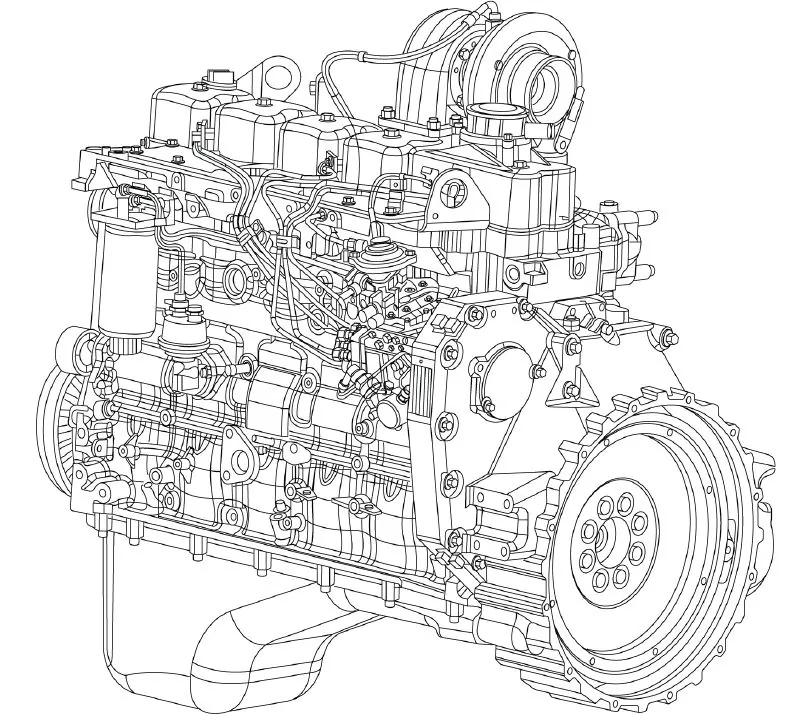
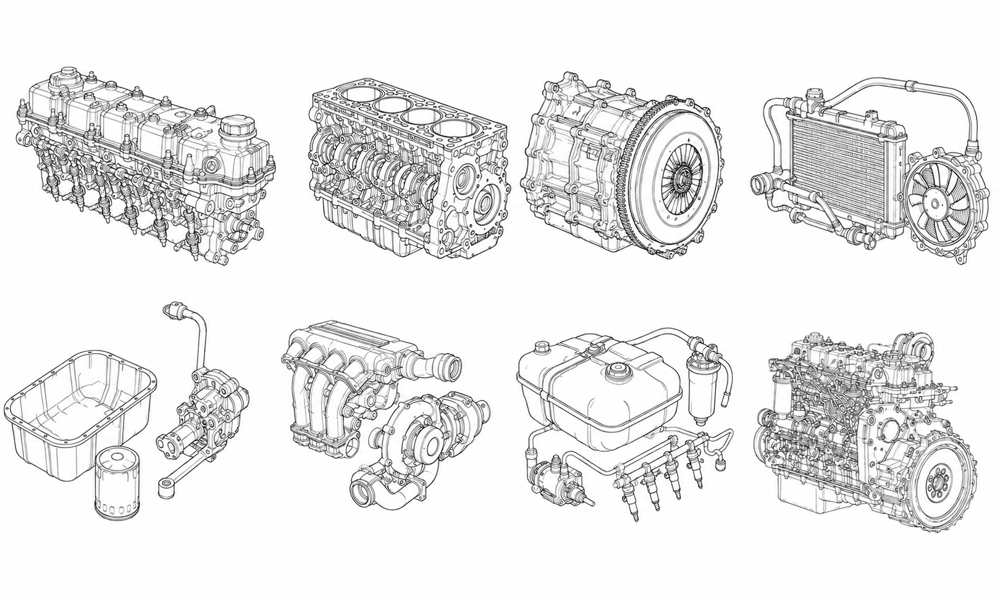

Mapeamento Técnico: Clique na Região Desejada

Superior
Inferior
Transmissão
Arrefecimento
Lubrificação
Admissão/Escape
Injeção
Visão Geral Nexpro: Motor Completo

Utilize o diagrama técnico acima, clique nos botões de categoria ou use a barra de busca para carregar o mapeamento comercial baseado em valor.